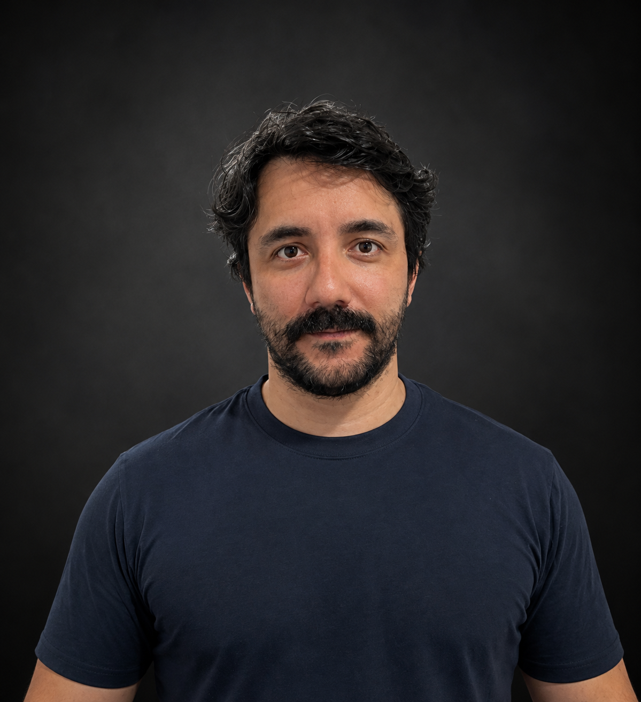

¡Hola! Soy Santiago Cossu, desarrollador web. Me gusta transformar ideas en sitios y soluciones digitales que no solo se vean bien, sino que también sean útiles, rápidas y fáciles de usar.
Trabajo con HTML, CSS, JavaScript, React y Node.js, además de herramientas como GoHighLevel y HubSpot. Tengo experiencia desarrollando sitios personalizados, landing pages, configurando CRM, realizando integraciones y mejorando proyectos que ya están en funcionamiento.
Me considero una persona detallista, responsable y comprometida con cada proyecto. Me gusta escuchar, entender lo que necesita cada cliente y mantener una comunicación cercana durante todo el proceso.
Ya sea para crear algo desde cero, mejorar una web existente o resolver un problema técnico, mi objetivo es siempre el mismo: encontrar una solución que realmente funcione y que deje al cliente conforme con el resultado.
Contáctame